Periaate
Kolme välilehteä ovat nyt kolme eri sukupolvea (V4-kehys, vanha modaali, vanha kortti). Uudistus tekee niistä yhden mallin: jokainen välilehti vastaa yhteen kysymykseen, siinä on yksi ensisijainen toiminto, ja jokainen lohko noudattaa samaa anatomiaa: otsikko · yksi tulkintalause · luku ja datan ikä · yksi linkki. Toiminnot avautuvat paikallaan (sheet), nappi ei koskaan vaihda välilehteä (D100).
Yksi seuraava askel ja sen nappi. Kenttä datasta (D98), kolme kysymystä lähteineen ja päivineen (D103). Arkisin 0 lukua, sunnuntaisin 1.
Yksi jana: kausi → jakso nyt → tämä viikko → pelaajan ääni → historia. Konseptin nimi on otsikkona kerran. Viikon suunnittelu kuuluu joukkueen viikkoon (D101).
Profiili + viisi todistekorttia (D102). Jokaisessa yksi lause, luvut datan ikineen, trendi ja yksi toiminto. Raakadata "Näytä kaikki mittaukset" -näkymän takana. Oletuksena ≤ 30 lukua (nyt 150–200).
0b · V-KOTI-kuori
Kuori on sama kuin V-KOTI-mockupeissa (28, 32, 33) ja tuotannon valmentajan navigaatiossa (lib/tm_valmentaja_nav.js, lippu valmentaja_v2): Koti · Viestit · Kalenteri · Joukkue | Pelaajat · Ryhmät | Työkalut ▸. Reitti on Pelaajat → pelaaja (D246, D243): Pelaajat-kohta on aktiivinen ja murupolku kertoo "Pelaajat › Topias O´Koskela". Työpöydällä (1280) kuori on vasen palkki, mobiilissa (390) alapalkki Koti · Kalenteri · + · Pelaajat · Valikko ja Viestit-kuvake yläkulmassa. Pelaajan sisällä pysyvät kolme välilehteä: Tänään · Polku · Näyttö.
1 · Tänään
Otsikkorivi (D46) ennallaan, mutta tilasiru on ainoa tilateksti: Polun tila -kortti poistuu (D99). Seuraava askel -kortin nappi tekee toiminnon paikallaan. Kenttä piirtyy datasta: ydinvahvuus alueena, jakso reittinä, viikot merkkeinä, osat pisteinä tiloineen. Kun aluetta ei ole, Kenttää ei näytetä tyhjänä vaan sen tilalla on jaksokortti ja "Aseta ydinvahvuus kentälle".
2 · Polku
Yksi jana ylhäältä alas: Kausi → Jakso nyt → Tämä viikko → Pelaajan ääni → Historia. Kausi näyttää tavoitteen pelaajan omin sanoin ja lähtötason vain, jos se on mitattu (D104). Jakso nyt on ainoa paikka, jossa konseptin nimi on otsikkona; klipit ja viikkohavainto ovat jakson sisällä. Tämä viikko on pelaajan viikko lukuna: harjoitukset tulevat joukkueen viikosta (14), omatoimi kirjauksista. Viikon suunnittelu (7 päivää, Täytä viikko, kuorma, läsnäolo) siirtyy joukkueen viikkoon (D101). Pelaajan ääni kokoaa olemassa olevat pelaajan tekstit (klippivastaukset viestit, D3-itsearvio, viikkokatsaus, kausitavoite omin sanoin): enintään 3 uusinta, jokaisella lähde ja päivä, ei uutta kirjoituskenttää (D105). Kun lähteitä on 0, lohkoa ei piirretä lainkaan: ei otsikkoa eikä paikkamerkkiä (kokeile ohjaimesta Pelaajan ääni · Ei tekstejä tai tilaa Vähän dataa).
2b · Kenttä valintapintana (D107)
Polussa valmentaja tai VP napauttaa kentän aluetta. Järjestelmä ehdottaa jakson tavoitteita sille alueelle: ensin seuran oma linja, sitten muut vaihtoehdot (konseptikaanon), suodatettuina pelaajan ydinvahvuudella, kausitavoitteella, pelihavainnoilla ja PHV-tilalla. Valmentaja valitsee yhden, ja "Aloita jakso" esitäyttyy. Ilman valintaa mitään ei tallennu.
Vyöhykejako pelimuodon mukaan: 5v5 = 2 × 3 (6 aluetta), 8v8 = 3 × 3 (9), 11v11 = 3 × 5 (15, sama kuin pelihavainnon phVyohyke). Pelimuoto on joukkueen asetus ja voi olla kaksi yhtä aikaa: esimerkiksi 13-vuotiaat pelaavat sekä 8v8 että 11v11, jolloin kentän yläpuolella on vaihtokytkin. Karkeat jaot ovat hienojaon yhdistelmiä (laita 0–25 %, keski 25–75 %), joten pelihavainnot luokitellaan mihin tahansa jakoon raakakoordinaateista, ja pelaajan alue säilyy, kun joukkue siirtyy isompaan pelimuotoon.
3 · Näyttö
Profiili kerran, sitten viisi todistekorttia 13 §6:n järjestyksessä: Kasvu ja kypsyys · Fyysinen · Tekninen · Peli · Kehon valmius. Jokaisessa yksi lause, joka tulkitsee luvun pelaajan iän ja PHV-tilan mukaan (§25, §28), luvut päivämäärineen (§14), trendi ja yksi toiminto. PHV luetaan kerran tmPhvTila-funktiosta ja näkyy kerran. Raakadata, Eerikkilä-taulukot, syväanalyysit ja mittauslista avautuvat "Näytä kaikki mittaukset" -näkymästä samalla sivulla.
3b · Tulkintasäännöt
Jokaisen todistekortin lause tuotetaan yhdellä säännöllä (syöte → lause) lib/-moduulissa, sama VP:lle ja Masterille. PHV luetaan kerran tmPhvTila-funktiosta, taso lasketaan testihetken iästä (§14), datan ikä päättää toiminnon. Täysi taulukko: 22_TULKINTASAANNOT.md. Tässä kolme esimerkkiä samasta pelaajasta eri PHV-tilassa.
| Kortti | PRE / LAH / tuntematon | PH (kasvupyrähdys) | POST / AN |
|---|---|---|---|
| Kasvu ja kypsyys | "Kasvupyrähdys ei ole alkanut (arvio PHV 14,1 v). Heikoin 30 m, CMJ tai MAS ei ole nyt kehityskohde (§28)." | "Kasvupyrähdys käynnissä, kasvutahti 8,1 cm/v. Kuormaa rajoitetaan (§25): ei hyppy- eikä maksimisarjoja." + Huomio-chip (≥ 7,2 cm/v) | "Kasvupyrähdys ohi. Fyysiset tulokset ovat vertailukelpoisia ikänormiin; heikoin osa-alue käy kehityskohteeksi." |
| Fyysinen · mitattu | "Taso 3 ikäisekseen testihetkellä (13 v). Vahvin: 30 m (t3), heikoin: MAS (t2). PRE: heikoin ei ole kehityskohde, seurataan." Ei fysiikkajakso-ehdotusta. | "… Kasvupyrähdyksessä tulokset vaihtelevat; ei johtopäätöksiä yhdestä mittauksesta." | "… Heikoin osa-alue käy fyysisen jakson kohteeksi." → toiminto "Ehdota fysiikkajakso" (vain ilman jaksofokusta) |
| Tekninen · mitattu | Ei PHV-porttia (tekniikkaa ei kypsyyskorjata). "TKI 54 (taso 4 ikäisekseen) ja nousussa (±3). Vahvin: pujottelu, heikoin: syöttö. Tukee kauden tavoitetta." PH lisää: "tekniikka voi notkahtaa tilapäisesti (§25)." | ||
| Peli · havaittu | "Peliäly 4,0/5 (28.9.). Hallussa: päätös, reagointi; kehittyvä: havainnointi, toteutus." + "Arvioijia 2/3, puuttuu: fysiikkavalmentaja." + D3-ero ≥ 1,5 → "keskustelunaihe". Havainto > 8 vk → amber. | ||
| Kehon valmius | "62/100. Heikoin ketju LL (55 %): liikkuvuusharjoite kuuluu tukiosaan." < 40 → "Klinikkalippu: ohjaus fysioterapeutille." | ||
| Datan ikä | ≤ 3 kk normaali · 3–6 kk amber + "mittaus yli 3 kk vanha" · > 6 kk amber + kortin ainoa toiminto on "Päivitä mittaus". Trendi vain, kun pisteitä ≥ 2 samasta lähteestä (testitulokset). | ||
4 · Mobiili 390
Sama renderöinti 390 px:n kuoressa: alapalkki vasemman palkin tilalla, kosketuskohteet vähintään 44 px. Ensimmäisellä ruudulla on otsikkorivi, signaali ja nappi (18 §6). Näytössä fokuskortti on auki, muut todistekortit yhden rivin haitareina. Kenttä ja kysymykset tulevat vierittämällä. Polku ja Näyttö ladataan vasta avattaessa (D52).
5 · Sheetit (D100, lukittu 13.10.)
Sheet avautuu nykyisen välilehden päälle ja tallennuksen jälkeen Tänään ja Polku päivittyvät; välilehti ei vaihdu. Sama komponentti VP:lle ja valmentajalle (D4, B2). Kokeile alla: avaa Aloita jakso, kirjoita jotain, sulje ja avaa uudelleen. Luonnos on JS-muuttujassa, ei selaimen tallennuksessa.
Uuden sheetin avaaminen sulkee edellisen (sen luonnos säilyy). Sheetin päälle ei avata toista sheetiä eikä modaalia.
Lyhyt toiminto (viikkohavainto: yksi valinta, valinnainen lause) on alasheet. Pitkä (Aloita jakso, Sulje jakso: useita kenttiä) on 390 px:llä koko ruudun sheet ja työpöydällä keskitetty dialogi.
Sulje, ‹ Sulje, Esc ja taustan napautus eivät hävitä kirjoitettua. Vain Tallenna tyhjentää luonnoksen, tai "Hylkää luonnos". Luonnoksen ollessa olemassa sheetin yläreunassa ja avauspainikkeen vieressä lukee "Luonnos säilytetty".
| Sheet | Tyyppi | 390 px | 1280 px | Luonnos |
|---|---|---|---|---|
| Viikkohavainto (+ lause, VEO-linkki) | lyhyt | alasheet, kahvapalkki, ruudun alareunassa | alasheet, keskitetty, enintään 540 px | valinta, lause, linkki |
| Aloita jakso | pitkä | koko ruudun sheet: ‹ Sulje ylhäällä, yksi täytetty nappi alareunassa | keskitetty dialogi, enintään 680 px | tavoite, oma tavoite, kesto, lause |
| Sulje jakso · 3 kysymystä | pitkä | koko ruudun sheet | keskitetty dialogi | kolme valintaa, lause, jatko |
6 · Benchmark
| Tuote | Käytettävyysratkaisu | Visuaalisuus | Mitä otamme · mitä emme |
|---|---|---|---|
| StatsBomb IQ | Pelaaja esitetään yhdellä tutkalla, mutta tutkan rinnalla on aina infopaneeli luvuista ja persentiileistä sekä jakaumakuva (violin) populaatiota vasten. Vertailu overlay-kerroksena samassa näkymässä, ei uudessa sivussa. | Yksi kuva, tiukka typografia, vähän värejä. Persentiiliasteikko pelipaikan populaatiota vasten. | Otamme: luku ei koskaan ilman tulkintaa ja populaatiota (meillä: oma lähtötaso + ikä testihetkellä). Emme: persentiilit pelaajalle (§7.22) emmekä pelaajien keskinäistä vertailua. |
| Hudl (youth) | Video ensin: profiili rakentuu klipeistä ja highlighteista, jotka pelaaja itse tekee ja jakaa (player-driven development). Valmentaja ohjaa tulkintaa, ei näytä raakadataa. Rullaus hitaasti: yksi tehtävä viikossa. | Tumma, videopainotteinen, suuret esikatselukuvat. | Otamme: klippi kuuluu jakson kontekstiin ja pelaaja on toimija (viikkokatsaus, omatoimi). Emme: julkista profiilia tai rekrytointinäkyvyyttä alaikäisille. |
| Wyscout | Pelaajasivu on tilastotaulukko + heatmap; vahvuus on hakutoiminto ja listavertailu. Käyttäjät moittivat, että profiilisivu on heikompi kuin lista ja että ulkoasu häviää Sofascorelle. | Tiheä, taulukkomainen. Paljon lukuja, vähän tulkintaa. | Otamme: varoittava esimerkki — juuri se, mitä Näyttö nyt on. Emme: tiheää taulukkoa oletusnäkymäksi. |
| 360Player | Yksi pelaajaprofiili, johon kaikki kertyy automaattisesti, ja yksi aikajana: havainnot, tavoitteet ja katselmusyhteenvedot peräkkäin. Tavoitteilla teema, otsikko, edistymispalkki. Johto näkee, kenet on katselmoitu ja missä on aukkoja. | Selkeä, kortti- ja aikajanapohjainen. | Otamme: Polun yksi jana ja johdon "kuka on katselmoitu" (Pulssi). Emme: edistymispalkkia pelaajalle (§7.22). |
| Premier League PMA / EPPP | Jokainen akatemiapelaaja kirjataan yhteen järjestelmään; testit verrataan biologiseen, kronologiseen ja pelipaikkastandardiin; kasvu mitataan säännöllisesti. Ongelmaksi todettu: "rich in data but largely untapped" (Ged Roddy). | Hallinnollinen, lomakemainen. | Otamme: PHV-korjattu vertailu ja katselmusrytmi. Emme: tietovarastoa ilman toimintaohjetta — juuri se riski, jota 22 torjuu. |
| XPS Network | Valmentajan päivittäinen työkalu: harjoitusten suunnittelu, mikrosyklit, arvioinnit ja eri osastojen data samassa. Pelaajan oma näkymä on sivuroolissa. | Toiminnallinen, työkalumainen. | Otamme: viikon suunnittelu on joukkueen, ei pelaajan näkymä (D101). Emme: valmentaja-ensin-mallia, jossa pelaaja on kohde. |
| Kitman Labs iP | Lääketieteen, suorituskyvyn ja valmennuksen data yhdessä, ja seuratasolla operatiivinen tilannekuva. Hankki PMA:n datan 2020. | Yrityssovellus, dashboard-painotteinen. | Otamme: yksi pelaaja, monta osastoa (fysio, fysiikka, valmennus) samaan korttiin. Emme: dashboard-sanastoa tai "performance"-kehystä. |
6b · Geminin sparri 9.10.
| Geminin huomio | Päätös | Perustelu |
|---|---|---|
| Sheet hidastaa oto-valmentajaa (tiistai, räntä, 18 pelaajaa) | Otettu. Viikkohavainto = kolme inline-nappia signaalikortissa, yksi napautus tallentaa; lause ja klippi vain halutessa, ja silloin avautuu lyhyt alasheet. Pitkät toiminnot (Aloita jakso, Sulje jakso) ovat mobiilissa koko ruudun sheet. | D100 (lukittu 13.10.): yksi sheet kerrallaan, pitkä toiminto koko ruudun sheetinä mobiilissa, sulkeminen säilyttää luonnoksen. |
| "Ei vielä tietoa" turhauttaa ilman oikotietä | Otettu. Kysymys 1 merkitään samasta napista. Kysymys 2 on pelaajan (sunnuntai), siihen ei oikotietä. | D103. |
| Historia tekstirivinä raskas | Osin. Historiarivillä trendi (↗ 2/3 osaa itsenäisesti · → vaihdettu). Graafinen historia on jo Kentällä haaleina reitteinä (D44). | Ei toista aikajanaa. |
| Massasyöttö joukkuelistasta (XPS) | Otettu taustalle, ei tähän. Kuuluu joukkueen viikkoon (14) ja Pulssin tiiminäkymään: "merkitse viikkohavainto usealle". | Pelaajatyöpöytä on yhden pelaajan näkymä. Kirjataan 07:n taustalistaan. |
| Videolooppi autoplay Tänään-kortilla (Veo/Hudl) | Ei. Klippi on linkki, ei upotus (R6.4, D55): alaikäisten videoita ei toisteta automaattisesti eikä ladata TalentMasterin kautta. | Thumbnail + linkki säilyy "Valmentajalta uusin" -kortissa. |
| Liikennevalo etusivulla (Kitman) | On jo. Seuran pulssi (20) ja Tänään-signaali hoitavat tämän. Oto-joukkue ei saa punaista katselmuksesta (D72). | Ei lisätä toista liikennevaloa. |
| Näyttö: haitari, vain ajankohtainen kortti auki (eri mieltä D102:sta) | Otettu mobiiliin, osin työpöydälle. Mobiilissa haitari: jaksoon liittyvä kortti auki, muut yhden rivin yhteenvetoina. Työpöydällä viisi korttia näkyy, jaksoon liittyvä on korostettu ("liittyy jaksoon"). | D102 täsmentyy. Työpöydällä ammattivalmentaja haluaa kokonaiskuvan yhdellä silmäyksellä. |
| 7,2 cm/v on jyrkkä kynnys | Osin. Kynnys pysyy (metodologia §25: loukkaantumisriski ≥ 7,2 cm/v), mutta 6,5–7,1 cm/v antaa lauseen "kasvu kiihtyy, seuraa" ilman chippiä. | Valmentaja päättää kuorman; sääntö vain nostaa esiin. |
| Yli 6 kk vanha data: "Päivitä mittaus" ainoana linkkinä liian jäykkä | Otettu. Tulkinta ja luvut näkyvät aina; Päivitä mittaus on ensisijainen linkki, toinen linkki säilyy. | Vanhakin suunta on oto-valmentajalle arvokas. |
| Vähän dataa: neljä "Ei testejä" peräkkäin | Otettu. Jos ≥ 3 korttia on tyhjiä, ne yhdistetään yhdeksi "Mittauskierros puuttuu" -kortiksi, jossa yksi toiminto. | Näkyy tilassa "Vähän dataa". |
| Mobiilista pois 5D-tutka ja pitkät kausitekstit | Otettu. Tutka ja pelaajan lainaus piilotetaan alle 720 px:n säiliössä; lause ja luvut jäävät. | 18 §6. |
| Sitoumus pois Tänään-näkymästä (eri mieltä D97:n painoarvosta) | Osin. Sitoumus ei ole enää kolmas kysymyskortti. Se näkyy rivinä signaalin alla ja nousee kortiksi vain, kun vaatii toimenpiteen ("sitoutui · vahvista"). D97 (yksi sääntö) pysyy, koska ristiriita pitää korjata joka tapauksessa. | Sitoumus on pedagoginen (pelaaja ottaa vastuun), ei byrokratiaa, mutta sen ei tarvitse viedä tilaa joka päivä. |
7 · Päätökset ja toteutusjärjestys
ydinvahvuus.alue {x,y,w,h} (valmentaja asettaa Polussa "Siirrä kentällä") ja jaksofokus.reitti; osien tila osa_arviot-kentästä. Ilman aluetta: jaksokortti + CTA, ei tyhjää kenttää. VP, Master ja pelaaja-app käyttävät samaa komponenttia ja samaa dataa ("yhtenäistetään").phVyohyke); pelimuoto on joukkueen asetus pelimuodot[], joka voi sisältää kaksi (13 v: 8v8 ja 11v11), ensimmäinen on oletus ja kentässä on vaihtokytkin; karkeat jaot ovat hienojaon yhdistelmiä, alue tallennetaan hienojaon koordinaatteina. Seuran linja ensin; jos linjaa ei ole tai alueelle ei ole linjan tavoitetta, muut vaihtoehdot (kaanon) näytetään suoraan. Tai oma tavoite (Tero 9.10.): nimi, osat a/b/c, domeeni; VP tai UTJ voi tallentaa sen samalla seuran linjaan tälle alueelle, jolloin se ehdotetaan jatkossa muillekin. Suodattimet: ydinvahvuus, kausitavoite, pelihavainnot, PHV (§25/§28). 5v5 (Leikkijä): leikkinimet, ei osien tasoja eikä K3:a. Tänään-välilehdellä Kenttä on vain luku.TalentMaster_Kehitystyopoyta.html), kierroksen B ensimmäinen vaihe. VP ja Master renderöivät kaikki kolme välilehteä samasta lib-moduulista ja linkittävät sivulle; B1–B6 rakennetaan suoraan uudelle sivulle, kuoret pienenevät. lukittu 13.10.ydinvahvuus.alue {x,y,w,h}) ei muutu. Aluejako = pelipaikka-alueet + maalivahti (3×3-ruudukko ei valittu; mockup 34). Aikataulu: 1.11 jaksokortti ilman kenttää, kun aluetta ei ole (ei "Aseta ydinvahvuus" -linkkiä ennen kuin klikkaustoiminto on olemassa) · marraskuu valmentaja/VP klikkaa alueen · joulukuu (R1) reitti, viikkomerkit, osat kentällä + pelaajan ehdotus "missä tykkään pelata" (ydinvahvuus.alue_ehdotus; U8–12: vain "missä tykkäät pelata", ei ydinvahvuutta, 09 §4). (Numero D172: D108 = viikkohavainto rinnakkain, D109–D121 mockup 23.)joukkueet/{jid}.pelimuoto; puuttuessa kysytään kerran.alue.y + alue.h > 84 → koko kenttä (koko:'koko'), muuten puolikas.Analyysin (a)-lista 1–12: sitoumussääntö (D97) · rikkinäiset _jspVaihda-napit · viikon lataus · mittauslistan roolibugi · D3-roolitarkistus · p.phv_tila → tmPhvTila · päivämäärä jokaiselle mittausryhmälle · "Pelaajan silmin" piilottaa luvut · kuollut koodi pois · kehittäjäkieli pois. Lisäksi kevyinä: D99, D103 (nykyisestä datasta), D104. Ei uusia kenttiä. Pelaajan ääni (D105, uusi muoto) rakennetaan Polkuun B4:ssä.
D98 alue ja reitti (+ Rules, "Siirrä kentällä") · D100 sheetit (yksi kerrallaan, pitkä koko ruudun mobiilissa, luonnos säilyy) · D105 Pelaajan ääni Polkuun · D101 viikko joukkueelle · D102 todistekortit · D106 yksi lib ja oma sivu (kierroksen B ensimmäinen vaihe) · D246 reitti Pelaajat → pelaaja. Koko sivu samasta datasta kuin pelaaja-app, jotta "sama kuva kaikille rooleille" on totta.
8 · Kuvat · V-KOTI-kuori (tumma teema)
Kuvat on otettu tästä tiedostosta komennolla node tools/design/kuvaa_22_v2.mjs (Chrome, 1280×900 ja 390×844). Aiemmat kuvat kuvat/22_01…22_14 ovat ennen V-KOTI-kuorta otettuja ja pysyvät ennallaan.
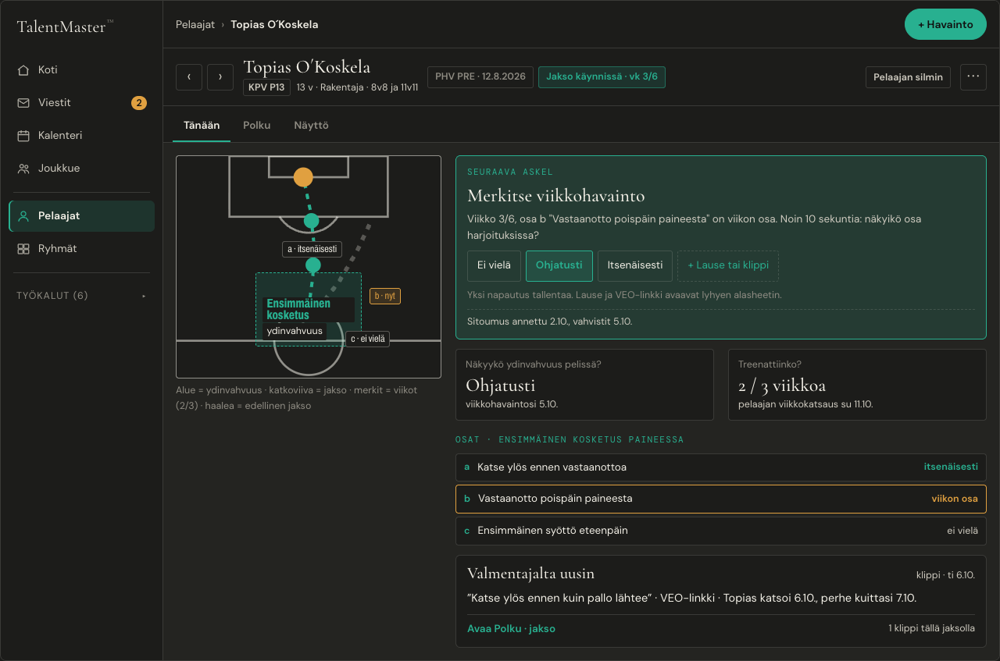
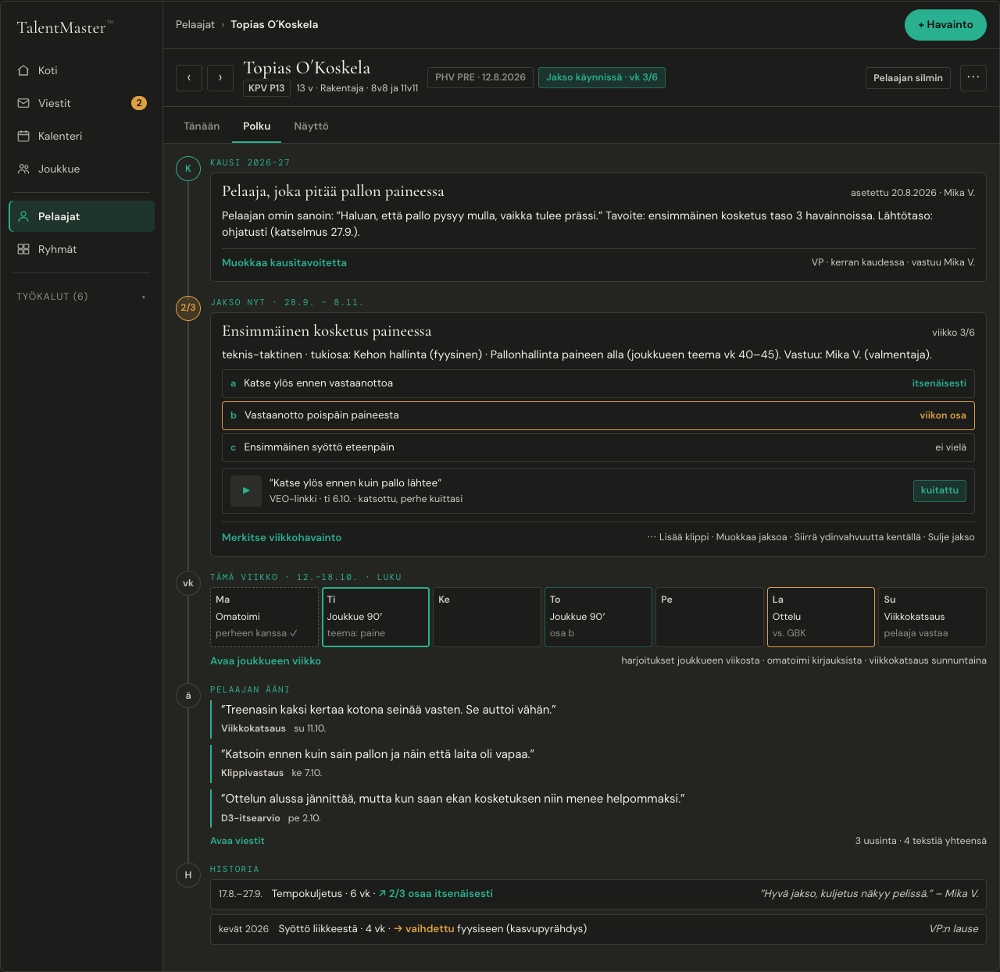
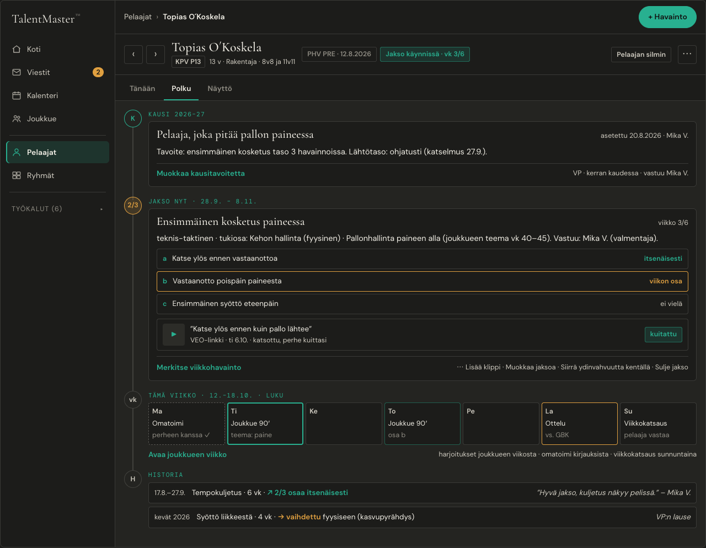
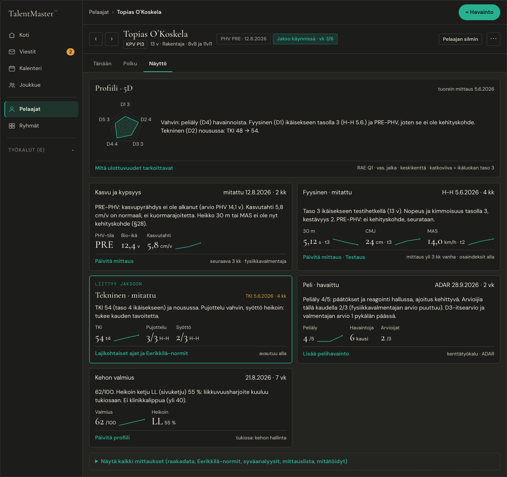
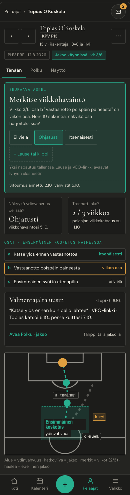
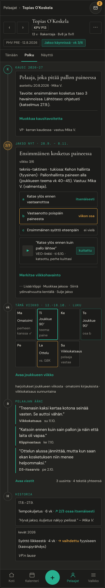
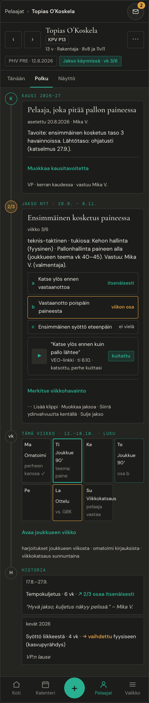
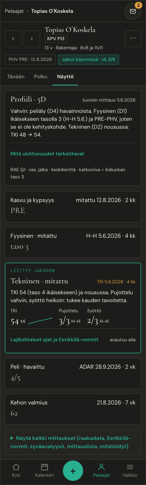
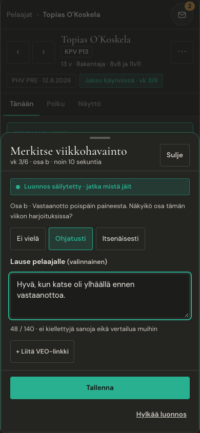
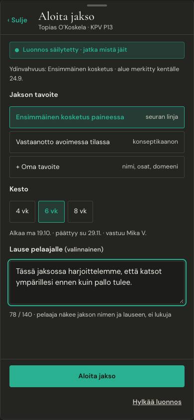
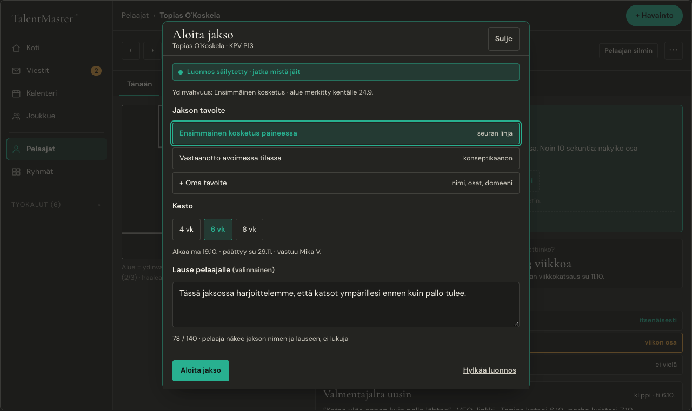
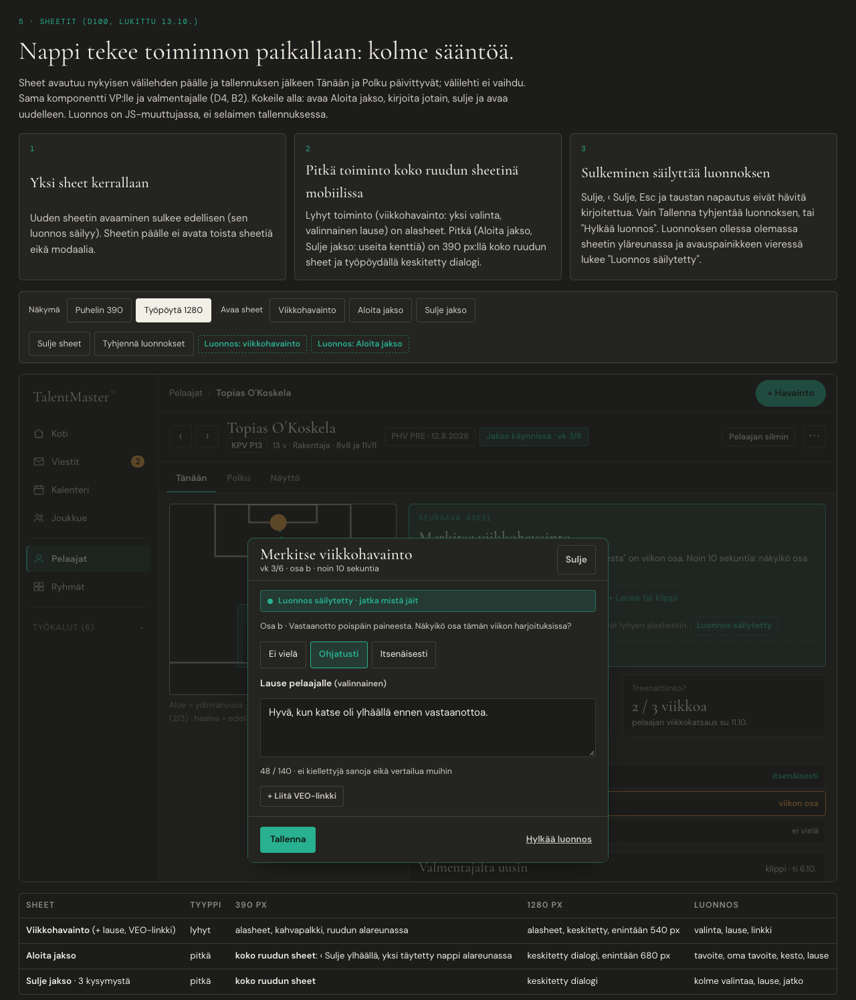
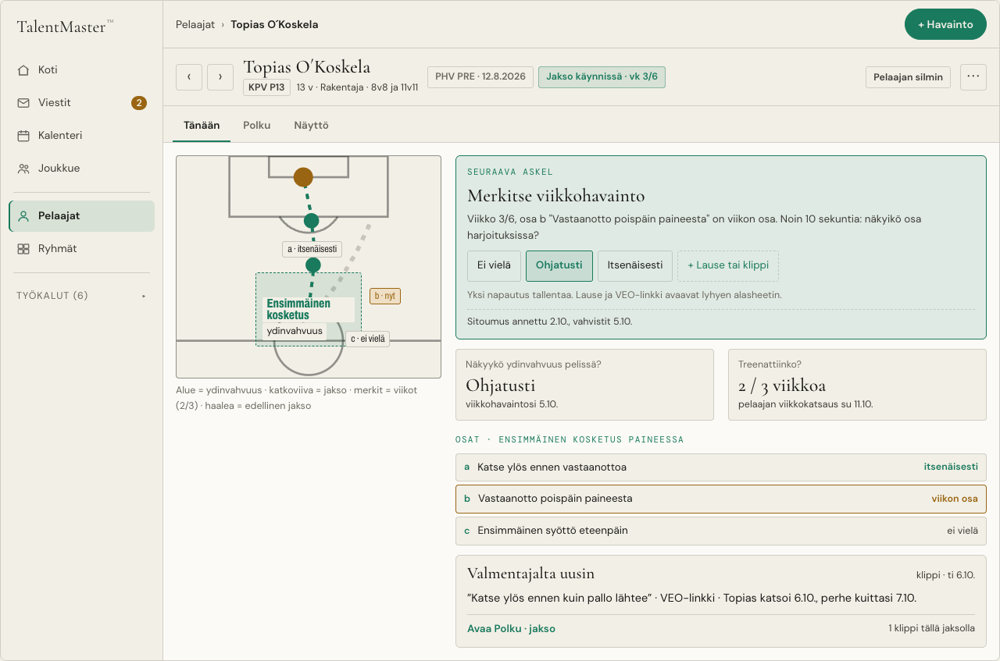
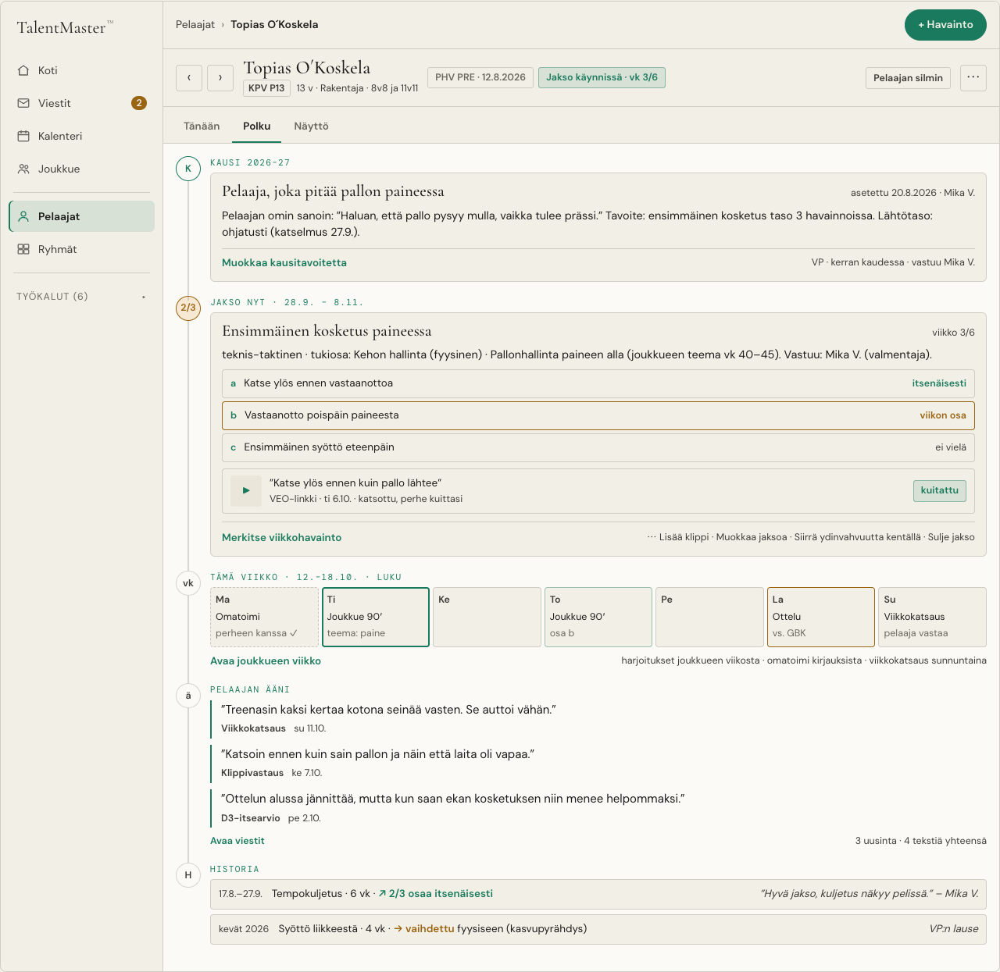
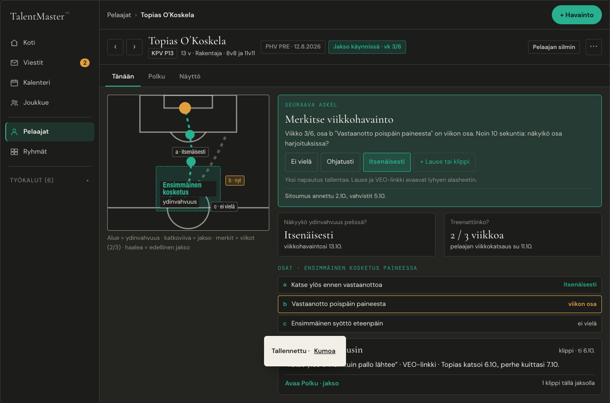